掌機 - PocketGo - DRAM超頻
PocketGo的DRAM-VCC是使用LP3992，因此，無法使用電阻方式改機，不過，從電路圖上，可以發現AVCC是2.8V，因此，可以從這裡偷電
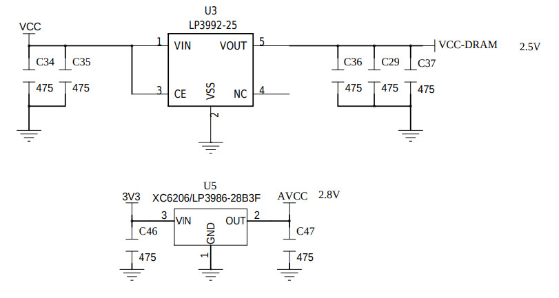
2.5V位置
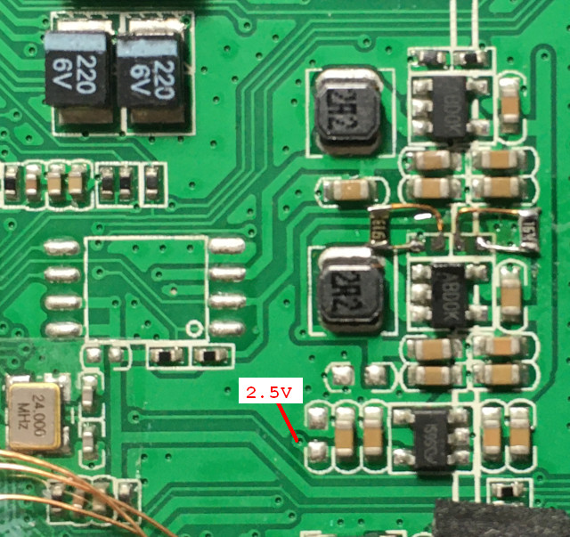
割線
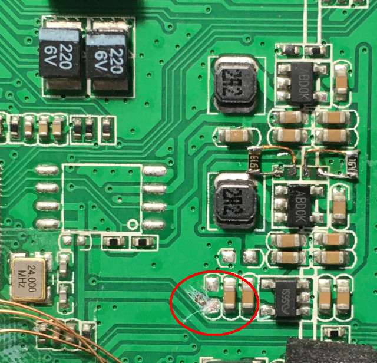
連接到AVCC
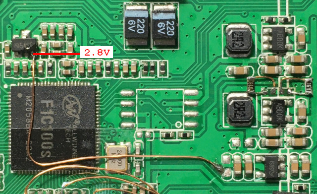
實際測得電壓2.78V
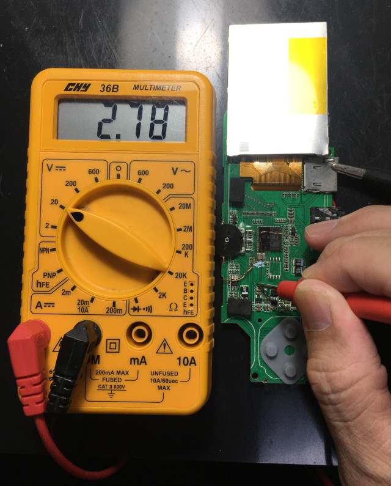
下載https://github.com/steward-fu/website/releases/download/pocketgo/pocketgo_dram_patch.zip，執行run.sh，DRAM超頻可以選擇156MHz~252MHz
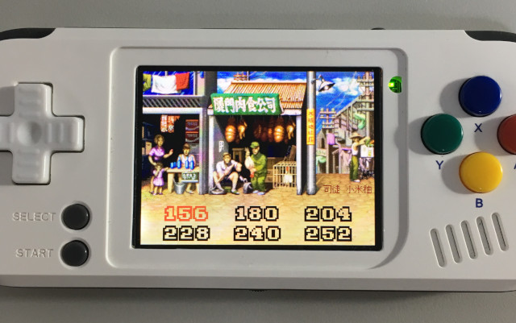
補丁更新中
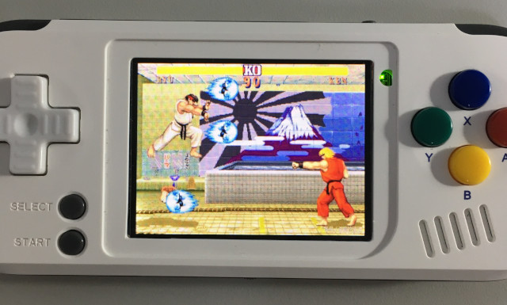
更新完成，重新開機就可以生效
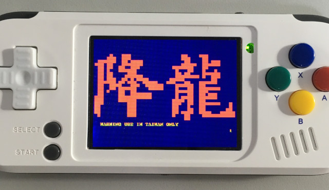
重新開機後，右上角會顯示目前DRAM超頻速度
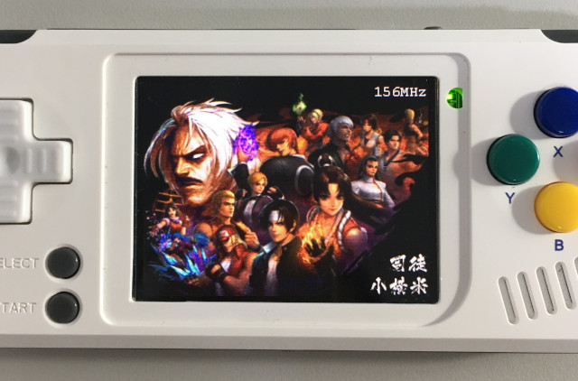
禁止使用於商業用途
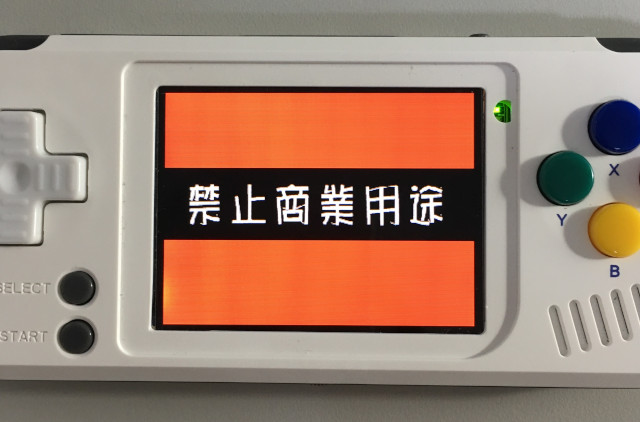
PocketSNES，新機動戰記，關閉FrameSkip，CPU=1.2GHZ，DRAM=156MHz，FPS=40
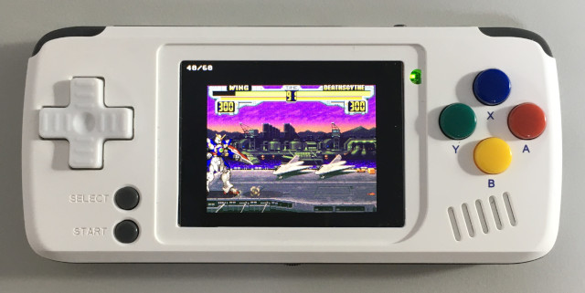
PCSX ReARMED，惡魔城，關閉FrameSkip，CPU=1.2GHZ，DRAM=156MHz，FPS=60，CPU使用率81%
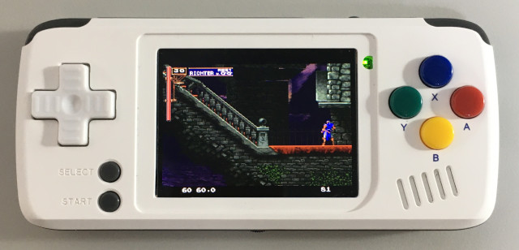
PocketSNES，新機動戰記，關閉FrameSkip，CPU=1.2GHZ，DRAM=252MHz，FPS=54
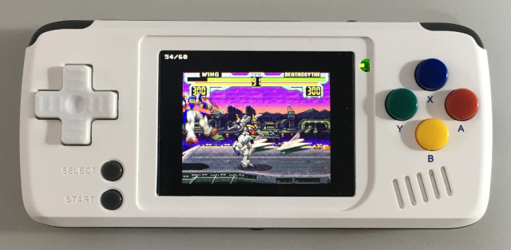
PCSX ReARMED，惡魔城，關閉FrameSkip，CPU=1.2GHZ，DRAM=252MHz，FPS=60，CPU使用率57%
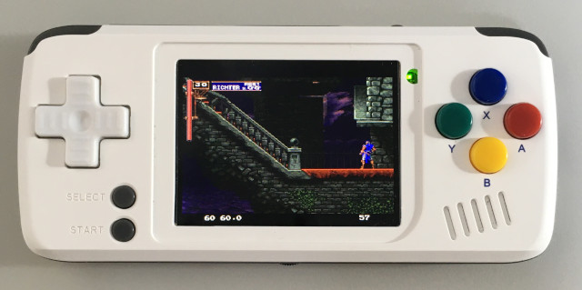